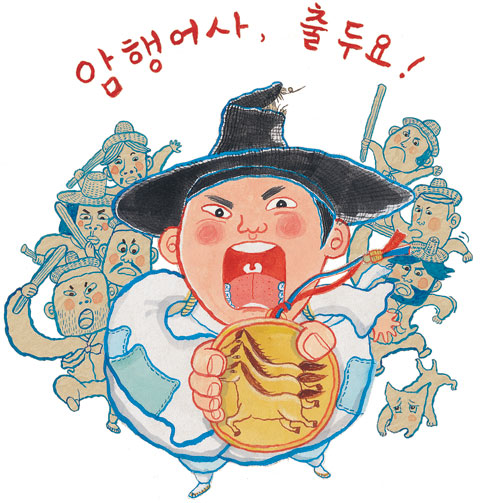
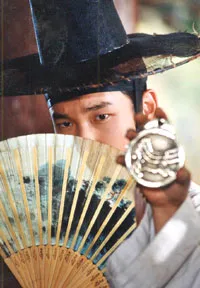
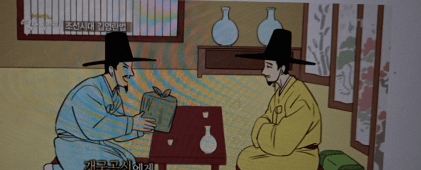
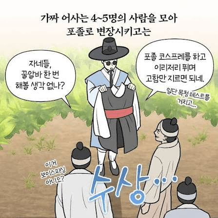
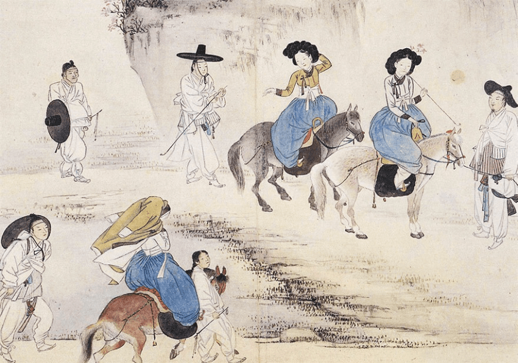
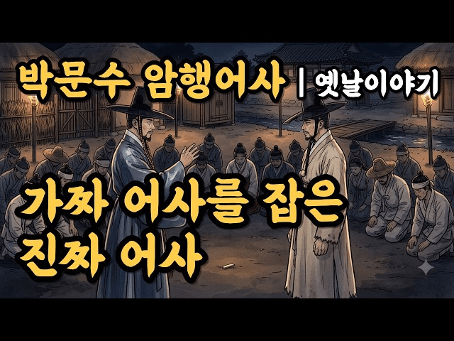
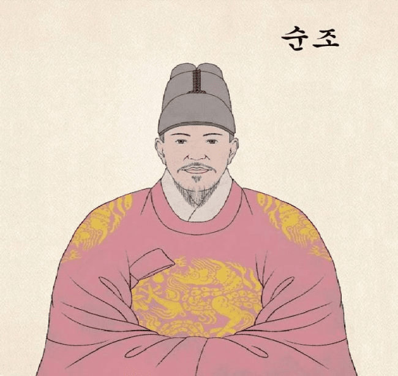
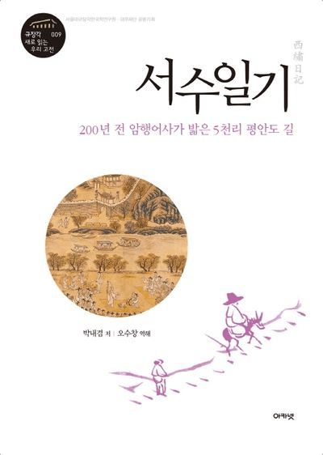
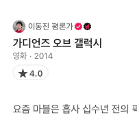

암행어사? 하면 뭐가 떠오름?
예를들어 옛날 사극들을 떠올려 보자
거기서 본 암행어사는 패턴이 딱 정해져 있음
거지꼴로 다니던 암행어사가 결정적인 순간에 마패 딱 치켜들고 "암행어사 출두요!!" 외치면,
잔치 벌이던 탐관오리가 그 자리에서 대가리 박고 뭐 그런거지
그런데.. 조선 후기 사기꾼들은 이 장면을 읽고 전혀 다른 생각을 떠올리는데...
"잠깐만... 저거 마패 비슷한거 하나 깎아서 흔들면 지방 사또들이 돈 바치는거 아님??"
미친 소리 같지만 진짜 벌어졌던 일들임
그렇게 조선후기 조선 팔도에서 암행어사 보이스피싱 전성시대가 열리게 됨

원래 법대로라면 가짜 암행어사 짓은 목숨을 담보로 하는 하이리스크 범죄임
마패나 임금의 밀지를 위조하다 걸리면 얄짤없이 참수형임
근데도 사기꾼들이 줄을 이었던 이유가 뭐냐?
성공률이 미쳤기 때문임
당시 지방 수령들은 열에 아홉이 세금 빼돌리고 장부 조작하던 양반들이라,
늘 뒤가 구려서 '도둑이 제 발 저린' 상태였음.
사또 입장에서 허름한 선비 하나가 밤중에 찾아와 한양 말투 쓰면서
"사또, 요즘 창고 장부 상태가 씁..."
하고 밑밥을 깔면 대가리가 하얘지는 거임

1. 만약 짭인데 속아주면: 그냥 내 뒷돈 몇백 냥 뜯기고 쪽팔리고 끝남
2. 만약 찐인데 문전박대하거나 가두면: 그날로 파직 + 유배 엔딩으로 가문 박살 남
이 공포의 이지선다 앞에서는 조선 최고 엘리트인 과거 급제자들도 바로 지능이 나락갔음
실제로 1772년(영조 48년)에는 웬 간 큰 사기꾼이 아예 울산부 객사(임금 위패 모신 관청 건물)까지
발로 차고 들어가 어사 행세를 하며 협박한 사건이 터짐
당시 관찰사가 임금한테 올린 보고서를 보면 기가 막힌데
"밑에 일하는 말단 아전들이 보기에도 백퍼센트 수상한 가짜인데, 정작 고을 수령이 지레 겁을 먹고 속아 넘어갔습니다..."
내 통장에 켕기는 게 많으니까 전화기 너머 어설픈 조선족 말투 김민수 검사님한테
현금 인출해서 갖다 바치는거랑 매우 똑같은 사태가 벌어진거임

초창기엔 배짱 하나로 밀어붙이는 단독범들이 많았음
오천국이라는 레전드는 가짜 어사 행세를 하면서 강원도 일대 역마(국가 공용 말)를 내 말처럼 공짜로 갈아타고 다님
요즘으로 치면 검찰 사칭범이 경찰서 순찰차 히치하이킹해서 도민 세금으로 숙식 해결하고 투어 돌다가 딱 걸려서 목이 날아간 거
시간이 지나자 중범죄 수사기록인 추안급국안에 아예 기업형 보이스피싱 조직들이 등장하기 시작함
한양 아현(지금은 애오개) 출신 김두행 같은 사기꾼들은 철저하게 역할을 분담해서 팀 단위로 움직였음
위조책: 나무나 납을 깎아 가짜 마패를 파고, 임금 도장 찍힌 가짜 봉서를 정교하게 위조함
주연배우: 한문 좀 읽을 줄 알고 기품 있는 한양 도련님 말투 구사하는 놈이 어사 역을 맡음
바람잡이: 덩치 좋은 패거리가 어사 수행원(서리,역졸) 행세하며 문 부수고 들어가 분위기 제압함

나중엔 사기꾼들도 머리가 더 비상해져서,
괜히 관아 털다가 목 날아갈 위험 감수하는 대신 시골 알부자(토호)들로 타깃을 바꿈
시골 부자들은 평생 진짜 마패를 본 적이 없는 데다, 고리대금이나 군역 기피 같은 약점 하나쯤은 다 있었음
밤중에 부잣집 쳐들어가서 마패 슬쩍 보여주고
"조용히 덮고 싶으면 합의금 내놔라"
하면, 신고도 못 하고 입막음 비용을 상납했음
완벽한 블루오션이었던 거임 ㅋㅋ

이렇게 전국에 짭 어사들이 바퀴벌레처럼 창궐하니까,
결국 팔도 관아와 포졸들한테 비상이 걸림
요즘 외지 선비 행색 하고 고을 기웃거리며 뒷조사하는 놈들은 가짜 어사 사기꾼이니까 보이는 족족 잡아 족쳐라!
하고 포위망을 쫙 깔아버림

그리고 대망의 1822년(순조 22년) 음력 4월 22일
순조 임금한테 진짜 마패를 받고 평안도로 파견된 진짜 암행어사 박내겸에게 사건이 터짐
박내겸은 비리 수령들 장부를 털려고 정석대로 허름한 나그네 옷을 입고 잠행을 돌며 백성들한테 탐문을 하고 다녔음
근데 잠복하고 있던 현지 포졸들 눈에 이 양반이 딱 걸린 거임
포졸들: 어? 행색은 거지 같은데 말투는 한양 양반이고 자꾸 고을 사정을 캐물어? 잡았다 이새끼!!
요즘 소문 자자한 가짜 어사 보이스피싱범이네
순식간에 포졸들한테 포위당한 진짜 어사 박내겸은 그 자리에서 숨 막히는 지옥의 이지선다에 빠짐

선택지 1 (품에서 진짜 마패 꺼내기): "나 진짜 어사야!!" 하고 인증하면 당장 풀려는 나겠지만,
반나절 만에 평안도 전역에 "암행어사 떴다!!" 소문이 다 퍼져서 탐관오리들이 장부 불태우고 증거 인멸함
암행 작전 폭망
선택지 2 (끝까지 정체 숨기기): 보안 지키겠다고 입 꾹 닫고 있으면,
진짜 어사가 보이스피싱범으로 감옥에 끌려간 뒤 사또 앞에서 주리부터 틀리게 생김
그야말로 정체를 까도 망하고 안 까도 망하는 코미디 현장이었음
그리고 어찌어찌 고생 끝에 출두 전 신분 노출 없이 위기를 간신히 모면한 박내겸은,
숙소에 돌아와 그날의 어이없고 아찔했던 순간을 자기 암행일기인 서수일기에 박제해 적어놔서 지금까지 남아있음
사기꾼들이 얼마나 판을 쳤으면 임금이 직접 보낸 진짜 암행어가 사칭범으로 몰려서 끌려갈뻔 했을지..
세 줄 요약
1. 조선 후기엔 뒤가 구린 지방 사또들의 심리를 노려 가짜 마패 들고 돈 뜯어내는 암행어사 사칭 보이스피싱이 대유행했음
2. 사형당할 죄인데도 돈이 너무 잘 벌려서, 나중엔 위조책,바람잡이까지 둔 기업형 사기단이 시골 부자들까지 털어먹음
3. 사칭범 잡겠다고 포졸들이 눈에 불을 켜고 다니다가, 진짜 암행어사 박내겸을 가짜 사기꾼으로 몰아 오랏줄로 묶을 뻔한 코미디가 벌어짐
댓글
수집 당시 댓글 116개
ㅇㅇ · 11.10 20:34:37
읍읍읍천읍천천 · 11.10 20:36:33
ㅇㅇ · 11.10 20:38:36

ㅇㅇ · 11.10 20:42:26
ㅇㅇ · 11.10 20:43:30
Khazanism · 11.10 20:46:48
ㅇㅇ · 11.10 20:47:02
ㅇㅇ · 11.10 20:50:06
수류탄이야 · 11.10 20:52:09
탄연보강 · 11.10 20:58:32
ㅇㅇ · 11.10 20:58:49
보라색맛홍차 · 11.10 21:08:07
ㅇㅇ · 11.10 21:22:10
마속 · 11.10 21:39:56
ㅇㅇ · 11.10 21:40:26
ㅇㅇ · 11.10 21:56:00
· 하희호 · 11.13 15:27:48
ㅇㅇ · 11.10 21:56:19
· ㅇㅇ · 11.13 09:26:09
· ㅂ · 11.13 13:30:27
· ㅇㅇ · 11.13 18:21:47
ㅇㅇ · 11.10 22:24:59
ㅇ2ㅇ · 11.10 22:31:11
ㅇㅇ · 11.10 23:20:38
ㅇㅇ · 11.11 07:14:01
실베도로롱 · 11.13 09:12:07
· 실베도로롱 · 11.13 09:12:32
ㅇㅇ · 11.13 09:12:20
ㅇㅇ · 11.13 09:14:35
· ㅇㅇ · 11.13 09:15:53
Ragnarr · 11.13 09:16:12
· ㅇㅇ · 11.13 09:26:44
· ㅇㅇ · 11.13 16:23:04
ㅇㅇ · 11.13 09:16:29
ㅇㅇ · 11.13 09:18:07
ㅇㅇ · 11.13 09:18:30
ㅇㅇ · 11.13 09:19:39
ㅇㅇ · 11.13 09:20:11
ㅇㅇ · 11.13 09:20:29
· ㅇㅇ · 11.13 13:03:50
ㅇㅇ · 11.13 09:21:34
한남은 시대와 장소를 가리지 않는다
ㅇㅇ · 11.13 09:22:18
· ㅇㅇ · 11.13 09:23:09
Enter · 11.13 09:22:24
ㅇㅇ · 11.13 09:22:38
아맹어사
출두야
!!!!!!!!!!
ㅇㅇ · 11.13 09:23:01
· ㅇㅇ · 11.13 09:28:33
ㅇㅇ · 11.13 09:24:44
· ㅇㅇ · 11.13 09:29:58
· ㅇㅇ · 11.13 09:31:27
· ㅇㅇ · 11.13 09:35:17
· ㅇㅇ · 11.13 09:39:13
· ㅇㅇ · 11.13 09:40:37
· ㅇㅇ · 11.13 10:53:26
ㅇㅇ · 11.13 09:25:51
· ㅇㅇ · 11.13 09:26:48
ㅇㅇ · 11.13 09:25:54
· ㅇㅇ · 11.13 13:06:43
구라핑 · 11.13 09:27:12
ㅇㅇ · 11.13 09:28:45
· ㅂ · 11.13 13:33:11
ㅇㅇ · 11.13 09:30:00
· ㅇㅇ · 11.13 09:33:02
· ㅇㅇ · 11.13 12:27:20
ㅇㅇ · 11.13 09:31:59
ㅇㅇ · 11.13 09:34:46
ㅇㅇ · 11.13 09:35:34
· ㅇㅇ · 11.13 09:37:25
ㅇㅇ · 11.13 09:36:35
· ㅇㅇ · 11.13 09:37:12
ㅇㅇ · 11.13 09:44:33
ㅇㅇ · 11.13 09:53:54
· ㅇㅇ · 11.13 16:24:14
원산 · 11.13 09:55:16
ㅇㅇ · 11.13 10:06:04
· ㅇㅇ · 11.13 10:23:42
· ㅇㅇ · 11.13 13:08:13
· ㅇㅇ · 11.13 14:37:12
· ㅇㅇ · 11.13 15:18:19
ㅇㅇ · 11.13 10:24:04
ㅇㅇ · 11.13 11:20:04
나는생각이없다 · 11.13 11:37:07
ㅇㅇ · 11.13 11:50:08
ㅇㅇ · 11.13 11:58:44
· ㅂ · 11.13 13:36:08
· ㅇㅇ · 11.13 16:24:41
1212 · 11.13 12:18:57
ㅇㅇ · 11.13 12:34:03
ㅇㅇ · 11.13 13:03:32
ㅇㅇ · 11.13 13:30:44
ㅇㅇ · 11.13 13:36:29
ㅇㅇ · 11.13 14:13:23
ㅇㅇ · 11.13 14:15:22
ㅇㅇ · 11.13 14:54:57
· ㅇㅇ · 11.13 14:55:10
ㅇㅇ · 11.13 15:17:14
ㅇㅇ · 11.13 16:18:02
ㅇㅇ · 11.13 16:20:32
날으는달걀 · 11.13 16:28:18
ㅇㅇ · 11.13 18:33:59
개댇지 · 11.10 20:32:43
· ㅇㅇ · 11.10 20:39:31
백석행 · 11.10 20:33:24
ㅇㅇ · 11.10 20:34:17
· Doggang · 11.10 20:42:16
· 아이스 · 11.10 20:51:42
· 독고준 · 11.10 21:02:45
· ㅇㅇ · 11.10 21:42:17
· ㅇㅇ · 11.10 21:58:19
· 잉여킹ㅋ · 11.11 03:29:38
· ㅇㅇ · 11.13 09:56:03
· ㅇㅇ · 11.13 10:03:38
· 멘탈소진 · 11.13 10:38:31
· ㅇㅇ · 11.13 11:37:35
· ㅇㅇ · 11.13 12:15:27
· =빵= · 11.13 13:00:59